Projects / 11
Topo Bridge
Morphogenesis simulation in a digital environment / topology optimization
Engineers, designers and architects have always been inspired by nature. Biological phenomena are the best engineering examples: what remains today are the forms that survived natural selection. An organism's development and the evolution of its structure over generations is called morphogenesis, and topology optimization makes it possible to simulate it and apply it to structures in which form and structure are one.
Morphogenesis
Engineers, designers and architects have always been inspired by nature. A new generation of tools has enabled architects to go beyond mere imitation and take this inspiration to deeper levels. Biological phenomena are the best engineering examples: what remains today are the most optimal options, the ones that have survived natural selection.
An organism's development from birth to maturity, and the evolution of its morphological structure over many generations, is called morphogenesis. Through topology optimization tools already used in other fields of engineering, it is now possible to simulate the morphogenesis of organic forms and apply it to architectural structures in which form and structure are integrated.
As a branch of science derived from nature, bionics plays an important role in the design of bridges. To simulate organic forms and test the results, I used the topology optimization method; the resulting forms are remarkably similar to organic ones.
Keywords: bionic architecture / digital architecture / morphogenesis / topology optimization / organic architecture
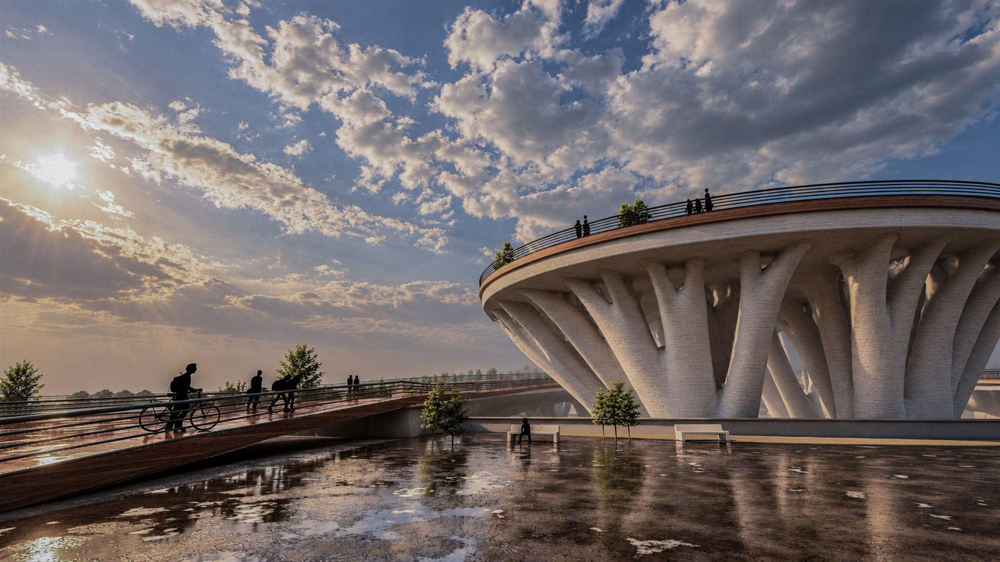
Site · Chitgar Lake, Tehran
- Location: the Chitgar artificial lake, west of Tehran.
- Climate: warm and moderate; prevailing winds from the west and north-west.
- Access: from the north, Chitgar Lake; from the south, Chitgar Forest Park.
- Focal points: linking the lake, a growing tourist attraction, with the forest park, a place for social gatherings and recreation.
Design process
Idea: linking two points of attraction, the bridge contributes to a more satisfied society. Concept: communication networks laid like a carpet, representing the context in which they operate.
Local activities tested the capacity of the bridge: viewpoint, access, bike path, gathering spaces, mall and food court; watching, walking, biking, eating, talking and shopping. A place that offers fast access, security and a dynamic environment.
Design diagrams: views and existing paths as the basis of the concept, a 254 m span between park and lake, with a collective space and three accesses.
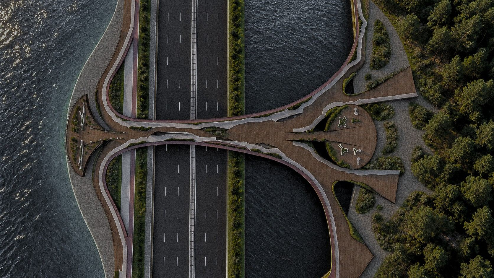
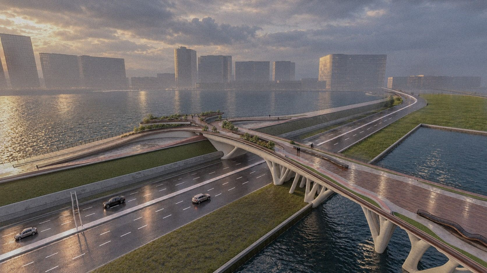
Form finding
Idea: natural morphogenesis as a source of inspiration. Concept: an organic form that results from topology optimization.
Topology optimization
Material is placed in the design domain according to the loads and boundary conditions of a given objective. Gradient-based mathematical tools find the solution, which can take any shape, size or connectivity. The optimization process runs in three stages: pre-processing, processing, post-processing.
Optimization steps
Initial lines and primary volumes were drawn in Rhino from the scheme. Finite element analysis yields organic shapes, optimized for the boundary conditions considered.
- 1Initial volume
- 2Separating segments
- 3Loading conditions
- 4Support conditions
- 5Optimized volume
- 6Assembly
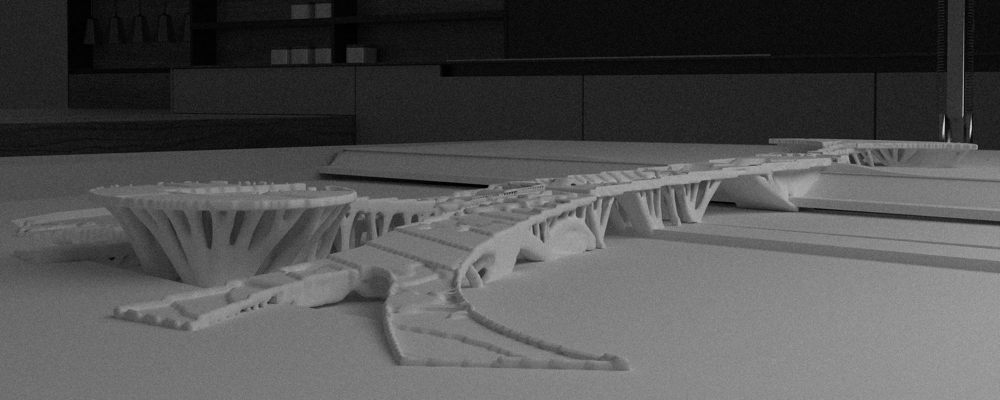
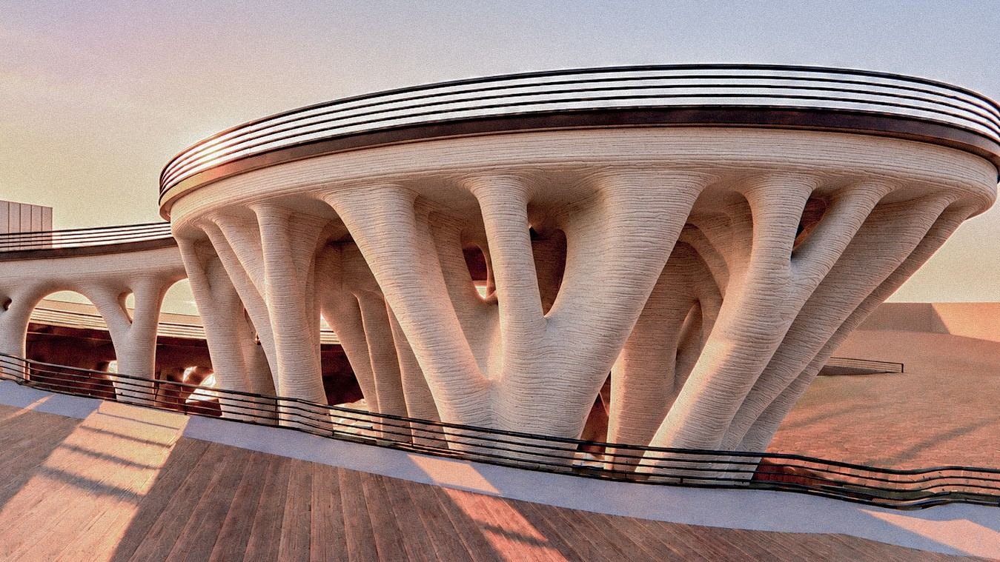
Plan design process
Deck and mesh intersected to create the plans; the decks were designed by tracking forces and optimizing the solutions. Places along the bridge invite people to gather, and green spaces and plants of many kinds make the bridge a symbol of nature for people on foot and on bicycles.
For bicycles and pedestrians the bridge has two entrances in the north and four in the south; at some points gaps open in the deck, following the form of the structure. The plan diagram separates a path for cyclists, a jogging track, a pedestrian track and green spaces.
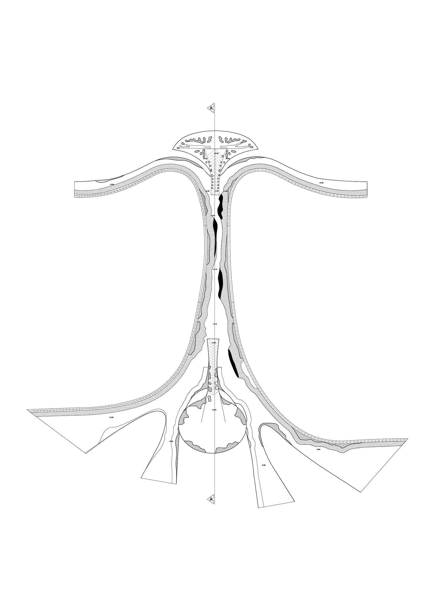
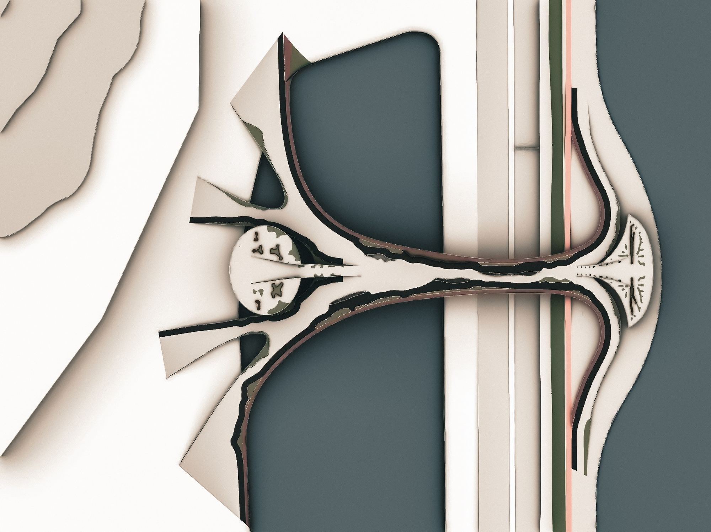
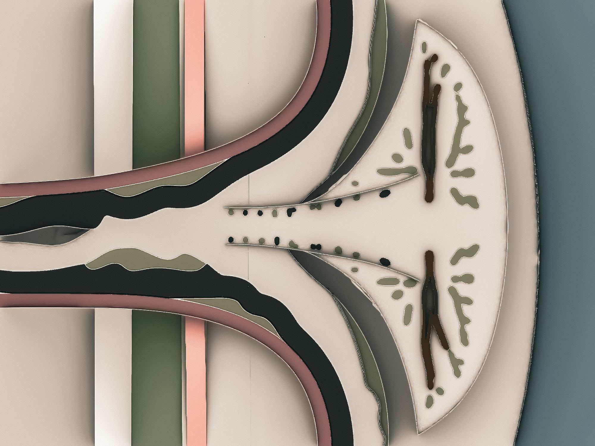
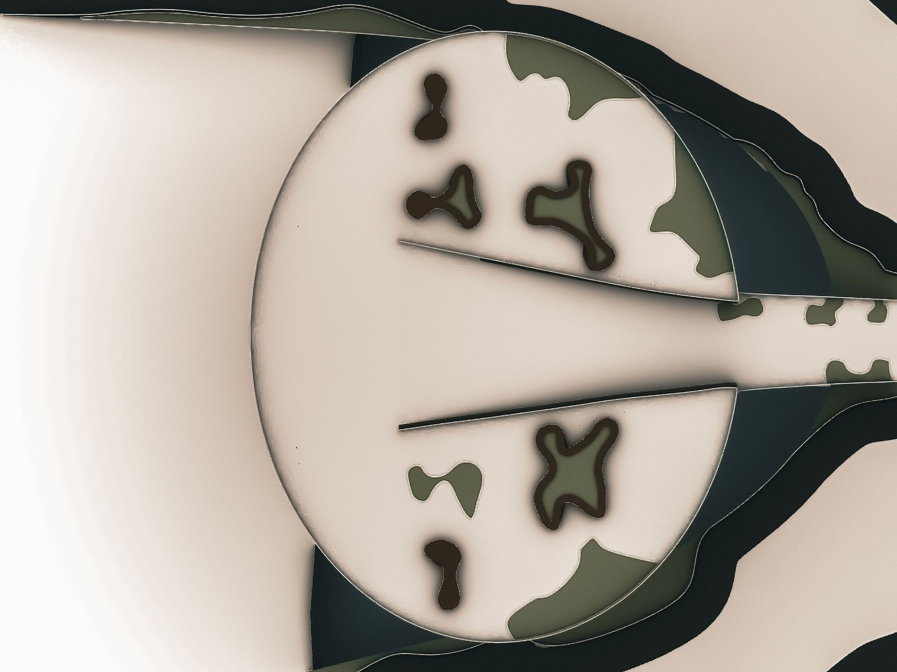
Section
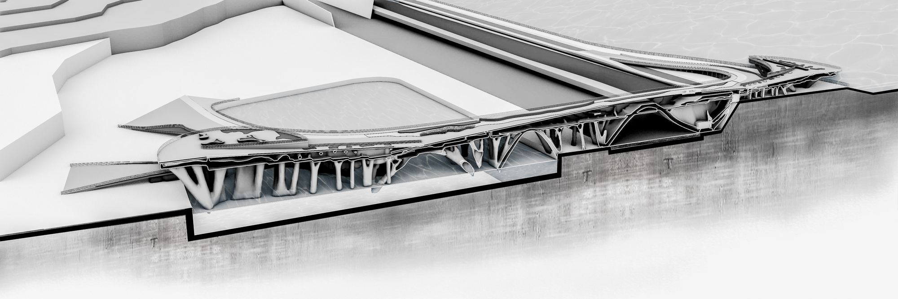
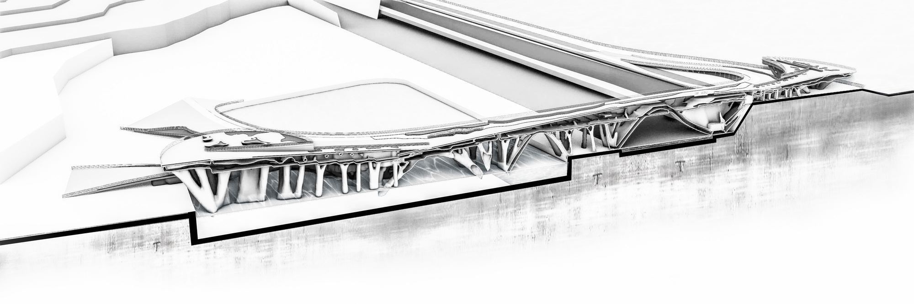
Materials
- Structure: concrete, Young's modulus 28 GPa, Poisson's ratio 0.18.
- Walkway: Rezista wood, recyclable and easy to maintain.
- Sidewalks: a safe running path, separate from the wooden walkway.
- Cycle track: asphalt, an even surface that is easy to repair as routine maintenance.
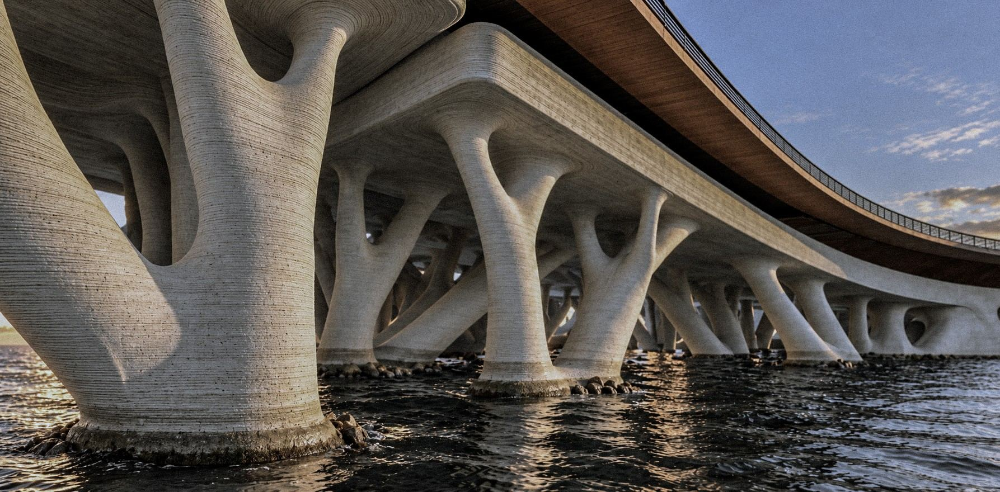
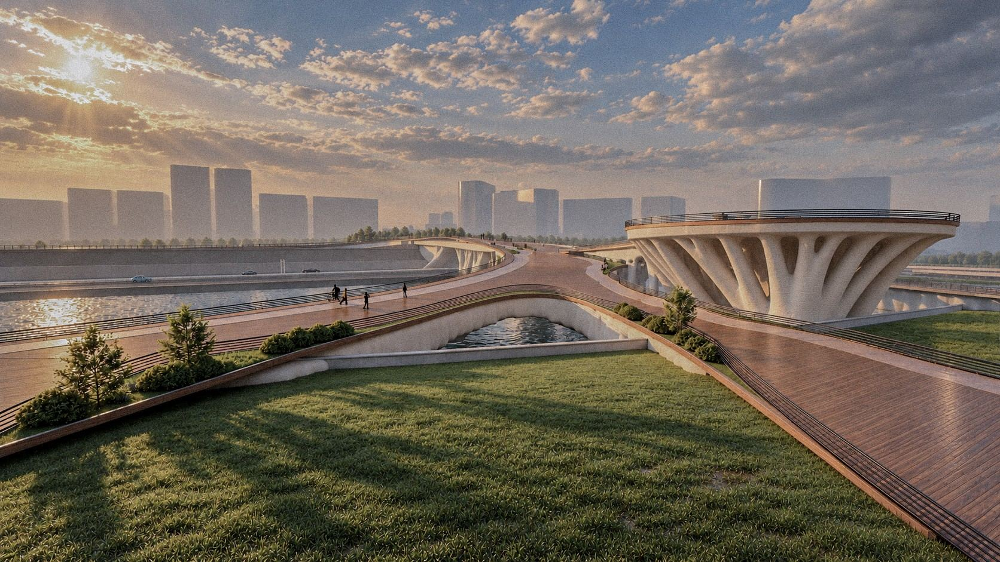
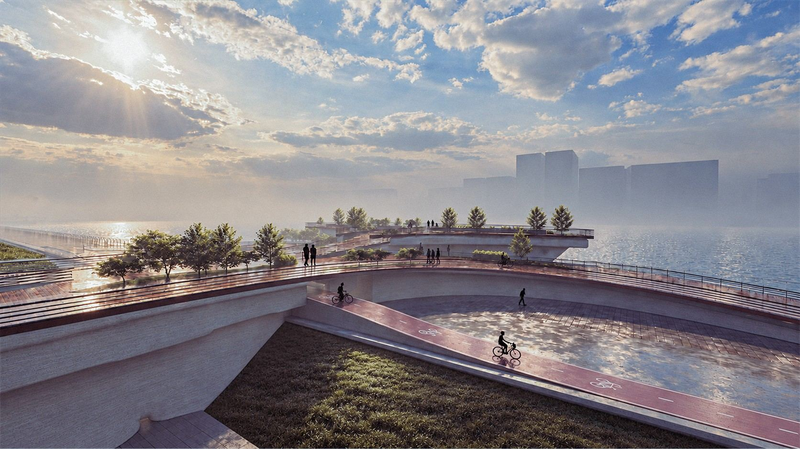
Views and model
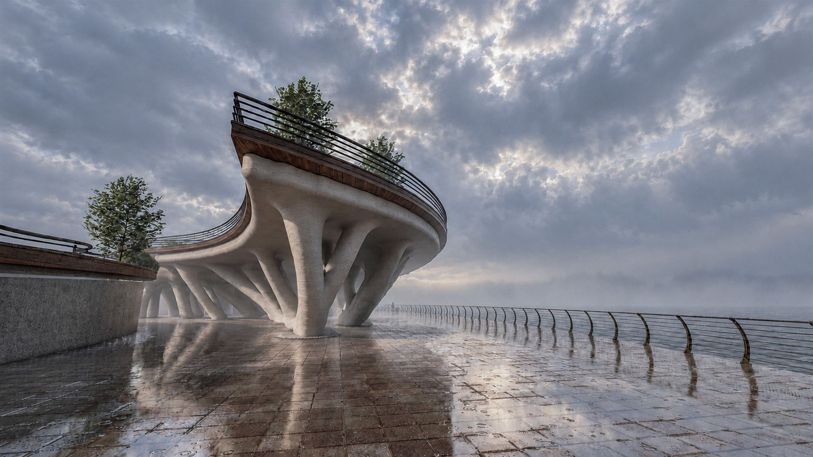
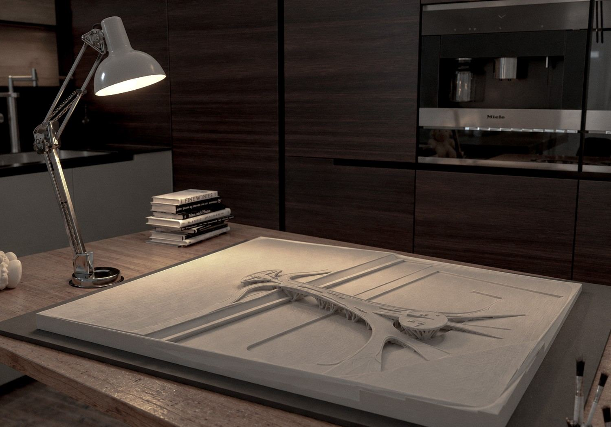